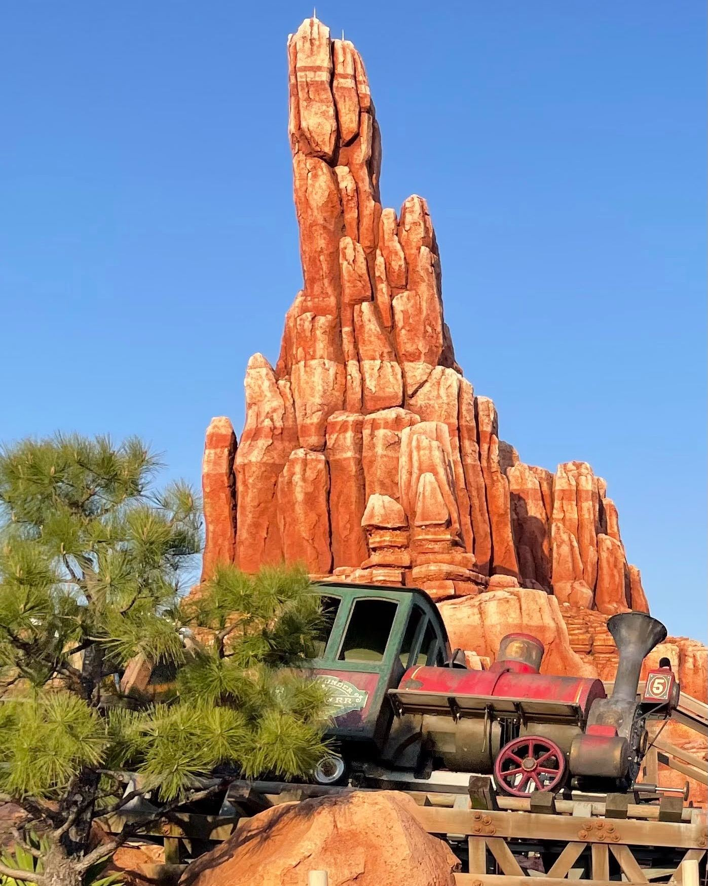

ウエスタンランドの最奥に足を踏み入れると、アドベンチャーランドの瑞々しい密林や、クリッターカントリーの温かな森の気配は消え失せ、乾いた風と赤茶けた孤立丘（ビュート）が支配する荒涼たる景色が目の前に広がります。そこには、かつてアメリカ西部開拓時代に一攫千金を夢見た男たちが築いた、ビッグサンダー・マイニング・カンパニー（ビッグサンダー鉱山会社）の残骸が、まるで巨大な墓標のように佇んでいます。
1848年、カリフォルニアのサッターズミルで金が発見されたことに端を発するゴールドラッシュ。人々は狂熱に浮かされ、未開の荒野へとなだれ込みました。このビッグサンダー・マウンテンもまた、莫大な金を内包する「約束の地」として、最新の蒸気機関や掘削技術、ダイナマイトを携えた開拓者たちによって瞬く間に乱開発の渦へと巻き込まれていくことになります。
しかし、現在の鉱山は静寂に包まれています。かつて数百人の鉱夫（マイナー）たちが汗を流し、歓声を上げ、あるいは欲望をぶつけ合った炭鉱施設には、ただ砂塵が舞うのみ。彼らはある日を境に、忽然と姿を消してしまったのです。
いま、この放置された廃坑で起きているのは、この世のものとは思えない奇妙な現象にほかなりません。無人のはずの鉱山列車（マイントレイン）が、突如として蒸気機関を轟かせ、凄まじい速度で岩肌を暴走し続けているのです。
それらの列車には、かつての開発者たちの不敵なユーモア、あるいは自らを鼓舞するための言葉が皮肉にも刻まれています。これらは暴走する列車に乗り込むゲストに向けられたメッセージであると同時に、自然の力を侮り、科学の力を信じ切っていた当時の「人間の熱狂」そのものを表しています。
次にウエスタンランドを訪れた際は、ぜひ離れた位置から岩山を走るマイントレイン（列車）に注目してみてください。時折、先頭車両の側面に小さく刻まれた「U.B. Bold」や「I.M. Brave」などの車体名を確認することができます。これらは、アトラクションをより細部まで観察して楽しむための、イマジニアによるこだわりのディテールです。
なぜ、この鉱山は無人となったのか。その背景には、人間の傲慢さと、大自然の精霊が持つ畏るべき力との衝突という、深く重い歴史が横たわっています。
この赤茶けた岩山は、もともとこの地に暮らしていた先住民（ネイティブ・アメリカン）にとって、大自然の強力な精霊「ビッグサンダー（偉大なる雷神）」が宿る、決して足を踏み入れてはならない神聖な地でした。彼らは、山を削り、傷つける者には恐ろしい祟り（天罰）が下ると、開拓者たちに繰り返し警告を発していたのです。
しかし、金という悪魔的な魔力に目が眩んだビッグサンダー・マイニング・カンパニーの役員や投資家たちは、その警告を「未開の迷信」として冷笑し、切り捨てました。ダイナマイトが静寂を爆破し、スチームトラクターが聖なる大地を蹂躙し、巨大な削岩機が山の骨組みを容赦なく削り取っていきました。科学技術の勝利と、果てしない富の獲得。人々がその黄金の頂点に達したかに思えたその時、精霊の怒りは爆発したのです。
突如として襲いかかった未曾有の大地震、次々と崩落する鉱坑、地下深くから噴き出す水。機械は破壊され、掘り進めた坑道は一瞬にして闇に葬り去られました。超自然的な脅威を前にして、ようやく自らの愚かさと禁忌の重さを知った人々は、すべてを投げ出し、着の身着のままこの山から逃げ散ったのです。
そうして残されたのが、今私たちが目にする水没したゴーストタウン「タンブルウィード」であり、主を失ったまま動き続ける「暴走列車」の正体です。精霊は人間を追い払った後も、彼らが持ち込んだ近代技術の象徴である列車を、まるで自然の怒りを永劫に誇示するかのように、いまなお狂暴に走らせ続けているのです。
アトラクションの乗車エリア手前にある駅舎内のオフィス（事務所）には、机の上の調度品や壁に掛けられた「古びた炭鉱地図」が置かれています。そこには、崩壊事故が起きる直前まで人間がどれほど山の奥深くまで採掘を進めていたかを示す、緻密な計画のプロットが残されています。
ウォルト・ディズニー・イマジニアリング（WDI）のクリエイターたちは、この「大自然の精霊（超自然的な力）」という抽象的なテーマを、目に見えるファンタジックな魔法やキャラクターとして安易に描写することはありませんでした。彼らが用いたのは、極めて「地質学的」かつ「物理的」な演出アプローチです。
ゲストを乗せた列車が、最初の巻き上げ（第1のリフトヒル）に差し掛かる時、暗闇の中で無数のコウモリが羽ばたく音を聞き、不気味に明滅する燐光を放つ鉱石を目にします。これは、地中深くの未知なる領域、すなわち精霊の懐へと侵入していくことへの視覚的・聴覚的な警告です。
さらに、第2、第3のリフトヒルにおいて、轟音と共に岩肌が揺れ動き、蒸気や水が噴き出す演出は、人間の「視覚、聴覚、重力（物理的Gフォース）」に直接訴えかけます。イマジニアリングの妙技は、精霊そのものの実体を描くことなく、引き起こされる地殻変動や物理現象を通じて、「目に見えない巨大な意志（山の怒り）」をリアルに体感させることにあります。開発を指揮した伝説的イマジニア、トニー・バクスターをはじめとするスタッフ陣の「引き算の美学」がここに息づいているのです。
また、この山の「もう一つの日常」を描く演出として、隣接するウエスタンリバー鉄道の車窓からのみ確認できる光景が存在します。鉱山が放棄された後もなお、この山の麓に住み着き、愛犬と共にのんびりと隠居生活を送る風変わりな老人「セドナ・サム」の姿です。彼は、自然の富を強欲に貪ろうとした探鉱者たちとは異なり、山の怒りに触れることなく、静かに自然と共生しています。この対比こそが、イマジニアたちが物語に持たせた多層的な奥行きと言えるでしょう。
次回、列車が最高到達点に達し、一気に荒野へと降下していく瞬間、全身を叩く風の音に耳を澄ませてみてください。この激しい風の音響効果と疾走感の連動により、アトラクションのスピード感と、荒野の大自然の厳しさがリアルに表現されています。
ディズニーの空間デザイナー「イマジニア」たちは、この広大なゴールドラッシュの舞台を100%本物にするため、驚異的な執念を注ぎ込みました。エントランスの左側に置かれている、アンティークな赤と緑の車体を持つ重厚な「スチームトラクター（蒸気トラクター）」。多くの人は精巧に作られたレプリカだと思って通り過ぎますが、実はこれ、1898年（今から120年以上前）にアメリカで製造され、実際に鉱山で食料や物資を運んでいた「本物のトラクター」なのです。現在、世界に数台しか残っていない極めて貴重な歴史的遺物です。
なぜこのような世界的なお宝が、東京ディズニーランドにあるのでしょうか。そこにはイマジニアとウォルト・ディズニーの並外れた執念が隠されています。
このトラクターは、もともとアメリカのディズニーランド建設時、ウォルト・ディズニーが目をつけ「売ってくれ」と頼み込みましたが、頑なに拒否されてしまいます。その後、1971年のフロリダ建設時や、他の映画撮影チームが頼んだ時も、頑固な農場主はすべて拒否し続けました。
しかし1980年代、東京ディズニーランドの建設に向けてイマジニアが再び交渉に向かった際、隣で話を聞いていた農場主の奥さんが大激怒したのです。
「いい加減にして！30年間うちで一度も使っていないこのポンコツを売り飛ばして、そのお金で私をどこか旅行に連れて行ってよ！」と。
奥さんの一喝にシュンとなった農場主はついに首を縦に振り、ディズニーは悲願を達成し、トラクターを日本へ運ぶことができました。この「意味のないほど本物にこだわる」イマジニアの情熱こそが、Qラインに本物の息吹を与えています。
さらに、ビッグサンダー・マウンテンのQライン（待ち列）は、単に順番を待つための通路ではなく、19世紀末の空気感をそのまま保存したオープンエア・ミュージアムとしての顔も持っています。削岩用のドリル、火薬を保管していた木箱、鉱山事務所の散らかった机、煤けたランタンなど、無数の生活の断片が視界に入ります。これらは単なるデコレーションではなく、ある日突然、精霊の怒りによって日常を奪われた男たちの「生活の臭い」をそのまま留めているのです。
数時間前まで、そこには男たちの高笑いや、泥にまみれた夢が確かに存在していた――そう思わせるほどのディテールの集積が、このエリアを本物の遺跡たらしめています。かつて金の輝きに目を奪われ、そして夢破れて去っていった無名の開拓者たち。彼らが残した錆びついた道具の数々は、富を追い求めた人間の哀愁と、それらを飲み込んで風化させていく大自然の悠久さを、私たちに無言で伝えているのです。
アトラクションの出口付近の通路脇には、当時使われていたとされる工具箱や、錆びついた機械のプレートなどが放置されています。これら細かな文字や記号を観察してみるのも、Qラインの緻密な作り込みを楽しむ贅沢な方法の一つです。
ゲストが乗り込む6台の鉱山列車には、それぞれゴールドラッシュや西部の荒野をユーモラスに表現した、異なる名前がつけられています。これらは、これから暴走列車に挑むゲストを鼓舞する（あるいはちょっと皮肉った）イマジニアの遊び心が隠されたネーミングです。
・I.B. Hearty（I be hearty：私は元気だ / 頑丈な心臓）
・U.B. Bold（You be bold：大胆にいこう / 勇敢であれ）
・U.R. Courageous（You are courageous：お前は勇敢だ）
・C.W. Brave（See who's brave：誰が勇敢か見てみろ）
・B.V. Brave（Be very brave：非常に勇敢であれ）
・I.M. Brave（I am brave：私は勇敢だ）
※他にも、西部の開拓スピリットを表現する「U.R. Daring（大胆であれ）」や「I.M. Fearless（私は恐れ知らずだ）」といった不敵なユーモアを秘めた車体名も、この荒野を走るマイントレインの歴史に深く刻まれています。
この名前に恥じぬ「勇気」を持って、赤土の岩山を暴走するマイントレインへと足を踏み入れてください。精霊は、今もあなたの心の中にある「強欲」を試しているかもしれません。
ビッグサンダー・マウンテンの周囲に植えられているサボテンや植物は、すべて「本物」です。ウエスタンリバー鉄道に乗って山の裏側に差しかかった際、左手の崖に見える「アオノリュウゼツラン」という植物は、日本ではなんと30〜50年に一度（1世紀に一度とも言われ、英名はセンチュリー・プラント）しか花を咲かせない奇跡の植物です。
開花期になると、高さ10メートルほどのアスパラガスのような巨大な花茎を一気に伸ばし、黄色い美しい花を咲かせ、花が咲き終わると自らの全てのエネルギーを使い果たしてパタッと倒れて枯死（枯れてしまう）してしまいます。2024年の夏、パーク内でこのリュウゼツランが開花した際は、全国ニュース（TBS「ゴゴスマ」など）で中継されるほどの大騒ぎとなりました。この奇跡の花を見られたら、あなたの人生にも最大の幸運が訪れるかもしれません。
最終編集日：